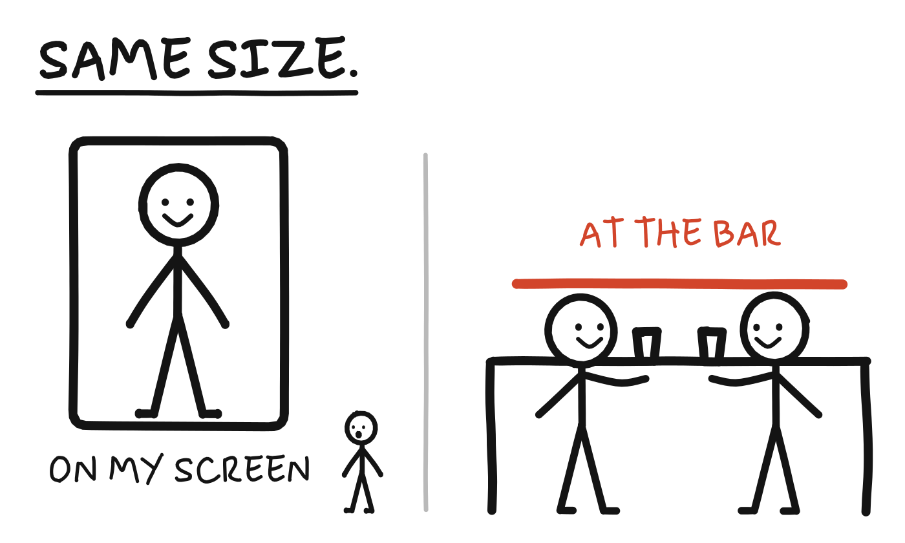
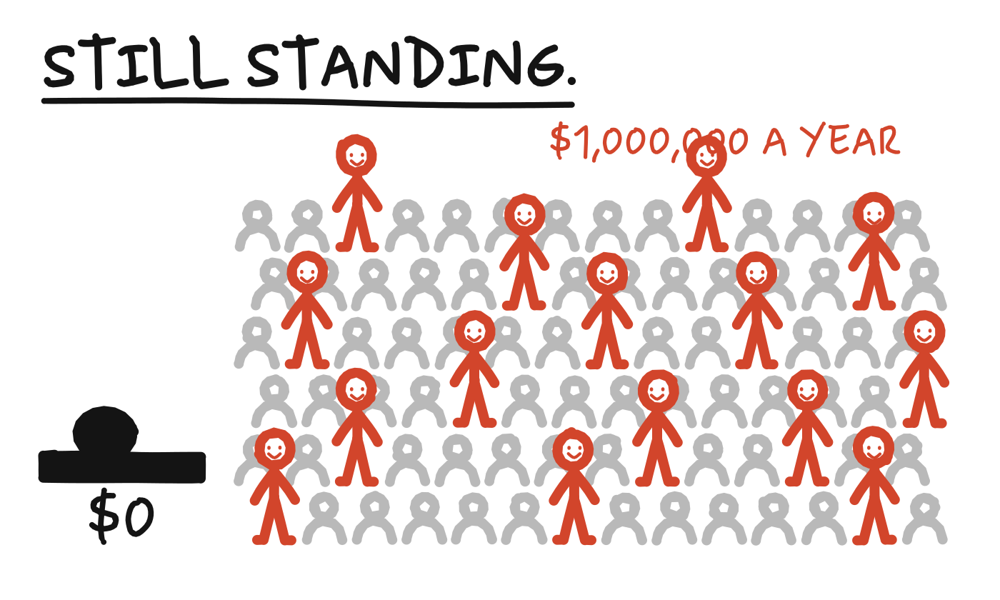
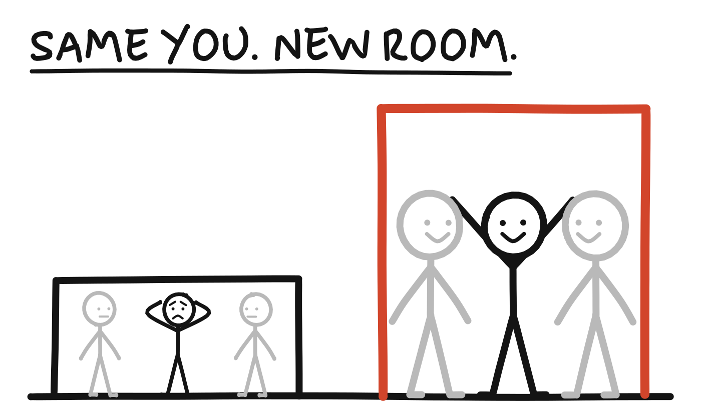
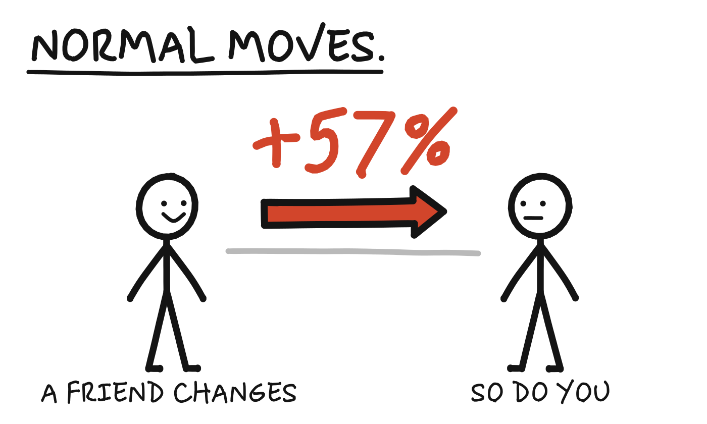
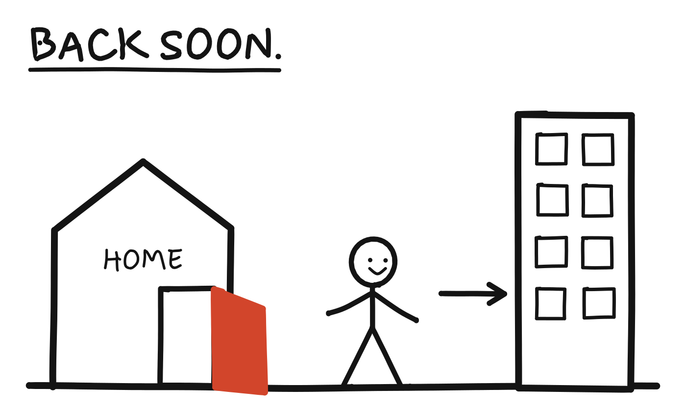
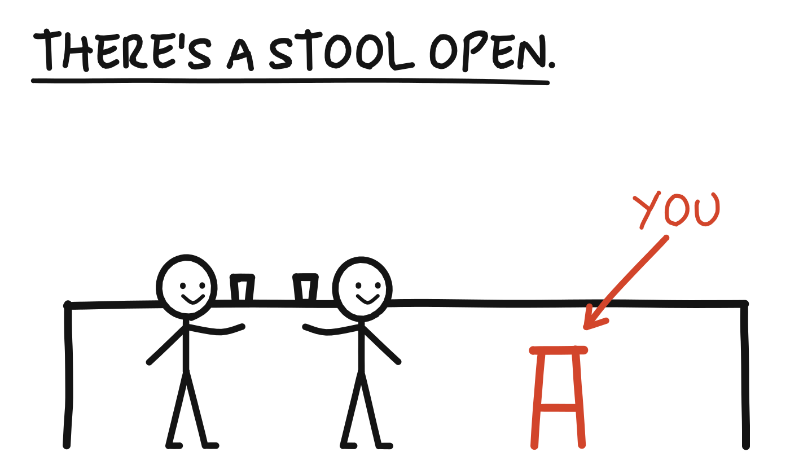

Want the whole conversation? Read the full interview with Lloyd Irvin.
On my screen, they were giants.
The marketers I read online. The ones whose numbers I couldn't picture ever being mine.
Then I went to my first big marketing seminar, Yanik Silver's Underground.
And there I am at the hotel bar, having a drink with one of the giants. Marlon Sanders.
He's a guy. Funny. Normal. About my size.
I remember the exact thought.
These guys are like me. I'm not below these guys.
I walked back into the ballroom and John Alanis got up. He showed how he'd built his business on two emails a day.
I can do that.
John gave me the how. I'd read plenty of how before that weekend, and none of it had moved me.
The bar gave me the "me too."
I left that hotel like a rocket ship. Same skills I walked in with.
A different ceiling.

Same two people. The only thing that changed was how close I was standing.
If you're building something of your own, here's the question I'd bet you're carrying around:
"I know what to do. So why does it still feel like it's for other people?"
Around 2011 I recorded a call with a man who'd lived the answer. His name is Lloyd Irvin, and the same thing had happened to him.
Lloyd owns a martial arts school in Maryland.
He'd nearly lost that school once, and saved it with what he learned about marketing.
Online, he hadn't made a penny.
So in 2003 he paid $3,000 for a seat at an internet marketing seminar and sat in the front row. Four or five hundred people in the room, the way he tells it.
The first speaker says: if you make more than $50,000 a year online, stand up.
Hundreds stand.
More than $100,000? Stay standing.
$250,000. Half a million.
Then a million dollars a year.
Lloyd turns around.
Ten or twenty people are still on their feet.
"I put my head down on the table and said, 'Good gracious.'" Read it in our conversation.

A million dollars a year online had been a rumor. Now he could count the people doing it.
Then he had the thought I had at the bar.
"There was nothing different between me and those guys back there, those million-dollar guys who were still standing."
He'd come to that seminar hoping to add $100,000 in a year.
He took notes on every speaker and went to work. Later, the first product he put up for sale, to grapplers, a crowd he already knew, did $180,000 on its first day. Read it.
He walked in aiming at $100,000 a year.
He walked out aiming at the people still standing.
The speakers gave him the how. The people on their feet gave him the number.
Here's what happened to both of us.
You don't decide what's possible for you by thinking it over.
You look around.
Whatever the people nearest you are doing feels normal. A little past that feels ambitious. Far past it feels like it's for other people.
That's your ceiling.
And you didn't build it. You borrowed it from the people you're around most.
Lloyd says it took him a while to see his own.
"It wasn't until I got out of that circle and started hanging around other people doing other things that I saw a whole new world." Read it.
A mentor had told him the same thing, harder. Most people are somewhere they don't want to be. A few are where they want to be. Decide which group you want to join, then do what that group does. He called it the 97% and the 3%. That's a blunt mentor talking, not a study.

Same you. Two rooms. Two heights.
Think about the last real idea you had for your business.
Who did you tell first?
What did their face do?
How long did the idea last after that?
Here's the truth about that moment.
You're not lazy. You're not short on information.
You did what every person does. You matched the people in front of you.
I did it. So did Lloyd.
The wrong room pulls you down. The right one pulls you up.
"Come on, Daegan. Successful people find each other. That doesn't mean being around them did anything."
Fair. Here's the closest thing I know to a measurement.
Researchers followed 12,067 people for 32 years. They tracked who was friends with whom, and what everyone weighed.
When someone's friend became obese, that person was 57% more likely to become obese too.*
The researchers asked your question. Was it only heavy people picking heavy friends? They concluded it wasn't. Other researchers have argued about how much the friends caused. The pattern is there either way.
That study is about weight, not business. I can't hand you one about goals.
I can tell you it's what I saw happen to me at a bar, and what Lloyd saw happen to him in the front row.
Here's what I believe. What looks normal moves from person to person, and you move with it.

Normal travels from one friend to the next.
Lloyd kept going to seminars. He'd come home wanting to bring his friends with him.
"They started being negative. They started knocking it: 'That won't work. It's a scam.'"
I can't tell you what Lloyd's friends were feeling. I can tell you what I saw in my father.
I told him I was going to start my own business.
I watched his face change.
He got scared. He told me it was too much risk, and it wasn't going to work out for me.
He wasn't against me. He was afraid for me.
And he wasn't wrong that it was a risk.
A lot of the people holding your ceiling low are like that. They love you. From where they stand, what you're describing looks like a cliff.
When you keep going anyway, they'll tell you you've changed.
Lloyd wants you to know that part is normal. In his words, being told you're changing "is supposed to happen." Read it.
Lloyd says it flat: "You've got to get rid of the negative people." That sounds cold, so here's what it looked like in his life. He stepped away from one of his best friends, "a huge roadblock" in his words, for about three years. The day we recorded our call, that friend had stopped by Lloyd's school. Still one of his best friends.
For me it was my dad.
I made a decision, on purpose. I can't talk to him for a little while. I'll come back when there's something to show him.
It was a stretch of time, not forever. I told Lloyd on the call it wasn't easy. Read it.
Now, if the scared person in your life is your husband or your wife, hear me.
You don't step out on them. You don't hide anything from them. The money and the hours you share, you decide together.
Tell them what you're doing. Then stop asking them to believe in it before there's anything to see.
And if they're worried about one particular deal, check that deal. Sometimes they're right.

The door stays open.
Good. Don't.
I'll be straight with you. Lloyd paid $3,000 for his seat. I paid for mine. Years in, when the business could carry it, I paid $25,000 for one year in a mastermind, a small group of business owners who meet to push each other.
Those were our bets on ourselves, and neither of us was betting the rent. Lloyd's school was doing more than a million dollars a year by then. I would never tell you to put your rent on a card to go sit in a room.
Look at what did the work at that bar, though.
The drink with Marlon wasn't on the ticket.
The people are what move you. The price isn't.
Three ways to find your room this week:
One test tells you if you're in the right place:
In here, is the thing I want an ordinary thing to want?
One thing.
Get yourself into one room where the thing you want is ordinary. Stay an hour.
You don't need anyone to believe in it first. Tell them where you're going, and go.
One visit won't raise your ceiling for good. It'll show you that it moves.
That's enough to make you go back.
I still think about that hotel bar.
Marlon didn't teach me a thing that night.
He stood next to me.

The stool is empty until you sit down.
Three More Things.
Lloyd kept walking into new rooms long after that front row. Years later, one of them was mine. He got on my email list, read an email, and paid $4,000 to come to my Invisible Funnel seminar. He had a business that could carry it. His words: "I've made my $4,000 back, and multiples of that." Read it.
And if you want to hear him tell all of it himself, the standing count, the friend who came back, and how he runs his day, the whole conversation is here.
John Alanis, the speaker from my first seminar, has a lesson of his own.
*Christakis and Fowler, "The Spread of Obesity in a Large Social Network over 32 Years," New England Journal of Medicine, 2007.